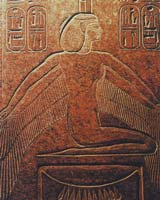

Ісіда або Ізіда, в єгипетській міфології богиня родючості, води і вітру, символ жіночності і подружньому вірності, богиня мореплавання, дочка Геба і Нут, сестра і дружина Осіріса. Ісіда допомагала Осирису цивілізувати Єгипет і навчила жінок жати, прясти і ткати, лікувати хвороби і заснувала інститут шлюбу.
Коли Осіріс відправився мандрувати по світу, Ісіда замінила його і мудро правила країною. Почувши про смерть Осіріса від руки бога зла Сета, Ісіда прийшла в сум'яття. Вона обрізала волосся, одягла траурні одягу і почала пошуки його тіла. Діти розповіли Исиде, що бачили пливе за течією Нілу ящик з тілом Осіріса.
Вода винесла його під дерево, що росло на березі біля Бібла, яке стало стрімко рости і незабаром труну повністю зник у його стовбурі. Дізнавшись про це, цар Бібла наказав зрубати дерево і привезти до палацу, де його використовували як опору для даху у вигляді колони. Ісіда, здогадавшись про все, кинулася в Бібл. Вона бідно одяглася і села біля криниці в центрі міста. Коли служниці цариці прийшли до колодязя, Ісіда заплела їм волосся і огорнула таким пахощами, що незабаром цариця послала за нею і взяла вихователькою свого сина. Щоночі Ісіда поміщала царський дитя у вогонь безсмертя, а сама, обернувшись ластівкою, літала навколо колони з тілом чоловіка. Побачивши сина в язиках полум'я, цариця видала такий пронизливий крик, що дитина втратив безсмертя, а Ісіда розкрила себе і попросила віддати їй колону. Отримавши тіло чоловіка, Ісіда вкрила його в болоті. Однак Сет знайшов тіло і розрізав на чотирнадцять шматків, які розсіяв по всій країні. За допомогою богів Ісіда знайшла все шматки, крім пеніса, проковтнув рибою.
За однією з версій, Ісіда зібрала тіло і відродила Осіріса до життя, використовуючи свою цілющу силу, і зачала від нього бога неба і сонця Гора. Ісіда була настільки популярна в Єгипті, що з часом набула рис інших богинь. Її шанували як покровительку породіль, визначальну долю новонароджених царів. Культ богині був також поширений в Стародавній Греції, Римі і навіть вплинув на християнське мистецтво.